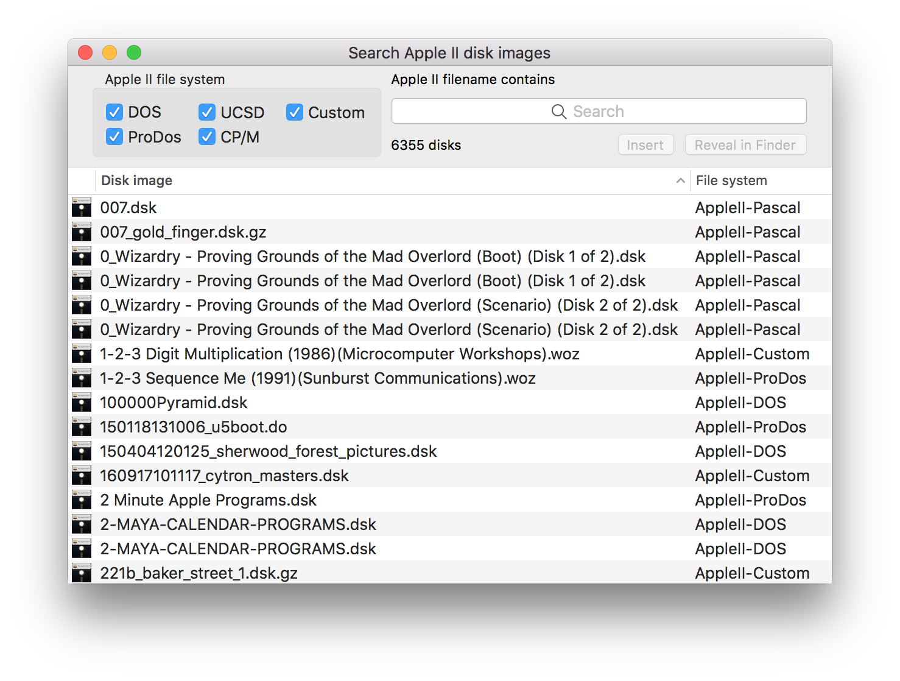
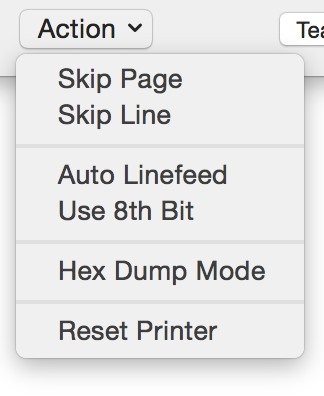

Copyright © Gerard Putter
Introduction
About the ROM image file
Run a demo to test the installation
Where to find Apple II documentation
About the evaluation version and licensed versions
Starting and stopping the application
General operation
The Apple ][ keyboard
Working with disk images
5.25" floppy disk drive
Hard disk and 3.5" floppy disk drive
Printer
Serial interface
Cassette recorder
80-column card for the Apple ][ and Apple ][+
80-column display on the Apple //e
AppleMouse
Real time clock
Z80 card and CP/M
Joystick and game paddles
Working with sound
Recording a movie
The A2V2 utility application
Working with character sets and international keyboards
Configuration
Controlling Virtual ][ with AppleScript
The Virtual ][ Inspector
Getting support
Release notes
Specifications of the virtual machine
Unsupported features
Why did I create this application?
Acknowledgements
Virtual ][ is an application that emulates the Apple ][ computer. Its main purpose is to enjoy, on your Macintosh computer, the nostalgic fun of the Apple ][.
Key featuresVirtual ][ accurately implements the hardware of the original machine in software, so all programs should behave like they did on the real machine.
The application requires macOS 10.11 "El Capitan" or better. There are no specific hardware requirements.
Note that, for reasons of copyright, the application does not come with the original Apple ROM images. For more information on this, read "About the ROM image file".
You can download and try an evaluation version of Virtual ][ for free. If you like the application, you can buy a license and enjoy the full-featured Apple ][ emulation. Read more about this in "About the evaluation version and licensed version".
The first time you start Virtual ][, you'll probably see a notice about a missing ROM image file. Virtual ][ can emulate three different machines: the Apple ][, the Apple ][+ and the Apple //e. Each machine needs a different ROM. This is how to install one or more ROM files.
Before version 8.0, Virtual ][ allowed the ROM files to reside in the same folder as the application.
This setup is likely to fail with later versions of the application, depending on the version of macOS and the configured
file access permissions.
It is recommended to move the files to the ROM folder, which you can easily access by selecting
"Show ROM Folder" from the File menu.
In each Apple ][, the memory address range from $D000
to $FFFF is occupied by ROM, containing the Basic interpreter (either
Integer Basic or Applesoft Basic) and the system monitor. In the
Apple //e, part of the memory range $C100 - $CFFF is also used
for ROM.
Virtual ][ needs a valid ROM image file to behave like a
real Apple II. Because the ROMs are copyrighted by
Apple, they are not bundled with Virtual ][. The ROMs
must be present as external files containing the exact memory image.
To be more precise: Virtual ][ uses the last 12 KB of
the designated file (or 16 KB in the case of Apple //e) as the ROM of a
newly created virtual machine.
If the application does not find the ROM file, it uses a built-in ROM
image, which is only able to issue the notice on the missing ROM
image file.
If you want to use a non-standard ROM, and know what you are doing, you can override the standard ROM image file search, and specify a ROM image file in the "ROM memory" section of the configuration window.
After you have installed the ROM image files, you can immediately test whether the installation was successful, and see some of the application's highlights at the same time.
To that purpose, click on the Applescript menu, and select any of the "example scripts".
You'll see a short explanation of what the demo will do; click the "Run" button to start the demo.
If you want to learn more about using Applescript with Virtual ][, read Controlling Virtual ][ with AppleScript
This Help file is about the Virtual ][ application. For example, it tells you how to
configure a virtual machine, how to use the emulated printer and how to work with disk images.
It does, however, not explain how to use the
Apple II computer. If you want to refresh your memory on
Applesoft Basic, Integer Basic, DOS or ProDOS commands, you might
find this web page useful: Apple ][
Programmer's reference. Or, if you want more detailed information,
have a look at this site; it contains
a large collection of Apple II manuals.
The application runs in one of three license modes:
This table shows the difference between the licenses:
|
|
|
|
|
|
"Evaluation Version" watermark in screen |
|
|
|
|
Pauses every five minutes |
|
|
|
|
Can resume a machine from a previous session |
|
|
|
|
Full use of matrix printer emulation (no "Evaluation Version" watermark) |
|
|
|
|
Record a movie of the emulated screen |
|
|
|
|
Mount a Mac folder as a ProDOS disk |
|
|
|
|
Use Unix named pipes for serial I/O (experimental) |
|
|
|
|
Intelligent power management (as described in Setting the speed) |
|
|
|
|
Maximum amount of emulated memory |
|
|
|
|
You're entitled to all future improvements of the application |
|
|
|
A license gives you the right to run Virtual ][ on
one computer at a time (you can install it on multiple
computers though).
Buying a license is easy; just go to the online Virtual ][ store.
Alternatively, you can choose "Buy a License" from the application menu in Virtual ][.
Right after ordering the license, you will receive an e-mail
with a license code. Choose "Enter License Code" in the
Virtual ][ application menu, and enter the information
received in the e-mail.
When everything checks out, the application is upgraded to the licensed
version immediately. There is no need to stop and restart the
application.
There are two ways to start the Virtual ][ application:
In either case, the application requires a ROM image file to boot a virtual machine. This is described in more detail in "About the ROM image file". Assuming a valid Apple //e ROM image is available and the application is started by double-clicking the application icon, it creates a default virtual machine and shows the main window.
A virtual machine stops (is "switched off") when you close its window (or when you stop the Virtual ][ application). When you do, the application presents a sheet asking if it should save the virtual machine.
The entire state is saved in a document, and when you later on open such a document, the virtual machine continues running from where it left off. This can, for example, be used to interrupt a lengthy game and continue playing at a later time.Instead of saving the complete machine state, you can also choose to just save the machine configuration. When you open a file saved this way, a machine is constructed with the configured components, and the machine is "switched on". In this case it does not continue a previous run, but starts from scratch.
The "default machine" defines the type of virtual machine the application creates when it is started. You can easily configure the application to use a default configuration of your choice. To save the current machine as the default, select the option "Make This the Default Configuration" in the Machine menu. Alternatively, select "Preferences" from the Virtual ][ menu. The preferences window allows you to select a pre-configured machine as the default.
If you never want to save the state of a running virtual machine, you can tell the application to skip the "save state" sheet when a virtual machine is closed. When this option is selected, you can always change your mind and still save the machine state by holding down the "ctrl" key while closing the window.
This is what the main window looks like when the application is started, assuming the Apple //e ROM image has been installed.
The main part of the window is the Apple ][ screen.
In the example it emulates a monochrome green monitor, but the
leftmost two buttons in the toolbar make it easy to show a color
monitor, or to change "green" to a different color (such as amber).
The screen as shown in the example is what an Apple //e looks like
when it is switched on: it waits for a bootable diskette. You can get
the Applesoft prompt by pressing Reset (emulated by control-F12 or
the Reset button in the toolbar).
Next to the screen sits the "peripherals" section, showing the connected
devices. The devices in the default configuration are:
Each device icon is a button. The way these buttons and the devices work is described in the next chapters.
The smaller buttons at the top of the peripherals section can be used to select or create diskettes and other media.
This is what the default configuration looks like. The default machine is an Apple //e with
You can change the configuration to your liking, as explained in the "Configuration" section.
The contents of the Apple ][ screen can be copied to the Macintosh clipboard. This can be done in two ways:
A virtual machine can temporarily be paused by selecting "Freeze Virtual Machine" from the "Machine" menu, or by clicking the "Freeze" button in the toolbar. You can later on resume with "Resume Virtual Machine" or the same toolbar button. As a shortcut you can also use the F1 key to pause / resume.
Virtual ][ faithfully emulates the speed of the original Apple machines, which was 1 MHz. Maintaining this exact speed is essential for programs that display animated graphics or produce sound. There are however situations where it would be nice to have a greater processing speed: while doing a lengthy calculation for example, or when accessing the floppy disk. To this purpose Virtual ][ has three modes of operation, which you can choose from the Machine menu or using the little "Speed" wheel in the toolbar.
A different way to set the machine speed is in the CPU section of the machine configuration, where you can set the machine speed with steps of 1 MHz.
If you have the full license version of Virtual ][, the high speed and
maximum speed settings come with a power management feature: while the Apple II is "idle",
in other words if it isn't doing anything useful, the speed is automatically reduced to "regular".
This saves energy and enhances the battery life on a notebook Mac.
If you want, you can switch the power management feature off with the menu item
"Regular Speed if Apple II is Idle", in the Machine menu.
Note that the highest effective speed that can be obtained depends on your Macintosh, on the number of simultaneously open virtual machines, and on other applications running at the same time.
You can preserve battery power even further by selecting the option "Pause virtual machines if minimized or hidden" in the "Power" section of the application preferences. The option is switched on by default.
The built-in keyboard of the Apple ][ computer has far fewer keys than your Macintosh keyboard. It even has hardly enough keys to produce the entire supported character set. For example, on the original machine the user had to press shift-M to produce the character "]", and shift-N for "^". The characters "[" and "\" could not be entered at all, although they could be displayed on screen.
These restrictions do not apply to the Virtual ][ emulator. All characters in the Apple ][ character set can be entered by typing the corresponding character on the Macintosh keyboard. This implies that shift-M just produces a capital M, not a "]".
The keyboard of the original Apple ][ and ][+ could
not be used to enter lowercase characters. Typing any of the letters
"a" to "z" produced uppercase "A" to "Z".
The Apple //e keyboard was able to enter uppercase and
lowercase characters, but many programs still expected uppercase
input only.
To emulate flexible keyboard behavior, Virtual ][ has
the "soft caps lock" option. When it is on, the keys "a" to "z"
produce uppercase letters, as on the original Apple ][
keyboard. When the option is off, these keys produce lowercase
letters (or uppercase when shift is also held down), as on the
Apple //e. This option can be toggled with the "Caps" toolbar
button.
The Apple ][ had four special keys that did not produce a character. Here is how they are emulated.
The Apple //e supports a few additional keys.
If the Macintosh clipboard contains text, it can be pasted into the virtual machine. The behavior is as if each individual character were typed on the keyboard. This "typing" occurs as fast as the Apple ][ can accept the characters, so no characters are lost in the process. If the Apple ][ is not reading the keyboard when the text is pasted, the text remains queued. Manual input is disabled as long as a pasted text is being entered into the Apple ][. A "newline" character in the text is converted to the "Return" key on the Apple ][.
A disk image is a representation, in a single Macintosh file, of an entire floppy disk or hard disk. Apple II disk image files come in several different formats; the next table shows the formats that Virtual ][ supports.
|
Disk image type |
File extension |
Description |
|
5.25" diskette, 16 sectors per track |
.dsk, .do, .po |
A regular diskette with 35 to 40 tracks, used with DOS, ProDOS, UCSD Pascal or CP/M. The size of the disk image file is 140 KB for a 35 track disk, up to 160 KB for a 40 track disk. |
|
5.25" diskette, exact replica of real diskette |
.woz |
Stores the data in exactly the same way as a real Disk ][. The format is suitable for both regular and copy-protected disk images. The size of a .woz diskette image is typically between 200 KB and 250 KB. Virtuall ][ supports both version 1 and version 2 of the Woz file format. |
|
Copy protected 5.25" diskette |
.nib |
A disk in so-called "nibbilized" form. Although this format supports some copy-protection schemes it has some serious limitations, unlike the .woz format. The size of a nib image is 232960 bytes for a 35 track disk, up to 266240 bytes for a 40 track disk. |
|
Copy protected 5.25" diskette (proprietary and deprecated) |
.v2d |
A proprietary format, capable of supporting many features of the Disk ][,
including "half-tracks" and tracks of non-standard length. The format is compatible with
the "D5NI" format used by one of the first Apple II emulators, "Stop
The Madness". You won't find disks with this format on the Internet. |
|
Compressed 5.25" diskette |
.gz, .gzip |
Any of the above diskette types, compressed with the gzip utility. Many Internet archives offer diskettes in this form, to save space and bandwidth. Such files can directly be used in Virtuall ][, without the need to expand them first. |
|
3.5" diskette |
.po |
Typically 800KB in size; contains the disk sectors in ascending order. Usually intended for use in ProDOS. |
|
Hard disk or 3.5" diskette |
.2mg, .2img |
A widely used, universal disk image format. |
|
Hard disk or 3.5" diskette (legacy format) |
.hdv |
A disk format based on one of the Mac Classic DiskCopy formats,
"NDIF R/W". If you have DiskCopy disk images, there is a good chance you can convert them to the .hdv
format by selecting "Convert Legacy Disk Images" from the Media menu. This starts a
utility application that allows you to select one or more disk image files and then tries to
convert them. If successful, the converted disk images are saved with the ".hdv"
extension in the same folder as the original. The original disk images remain untouched.
Note the conversion works one-way only.
|
Apart from disk images, Virtual ][ also lets you mount a Macintosh folder as an Apple ][ floppy disk or a ProDOS hard disk; this provides a way to copy files from one environment to the other.
Many disk images with original programs are available on internet, but Virtual ][ can also help you converting your own Apple II diskettes to disk images, using the A2V2 utility application. If you still have an original Apple ][ with a working disk drive, Virtual ][ can help you converting original diskettes to disk image files. To this purpose, select "Convert Apple II Diskettes" from the "Media" menu. This will start a separate application, named A2V2 (short for Apple ][ - Virtual ][). Read the application's Help section to learn how to do the conversion. A2V2 can convert in both directions: from diskettes to disk image files and vice versa.
Because the capacity of an Apple ][ diskette is very small by todays standards (typically 140 KB), you might end up with many diskette image files. Virtual ][ offers several ways to keep track of the diskettes and their contents.
These options are discussed below.
If you don't have too many disk images, it is recommended to put all your disk images in one folder (with subfolders as necessary), and to make this the "favorite disk folder" in the Virtual ][ preferences. That way you can use the "Disks" button in the toolbar to open your disks folder in the Finder and drag a disk to an empty Virtual ][ disk drive.
A powerful mechanism offered by Virtual ][ is a built-in search window. It lets you find the disk images that contain an Apple II file with a specific name, no matter where these disk images are on your Mac. This works for diskette images with extension .dsk, .po or .do, and their gzipped equivalents. It also works for hard disk and 3.5" disk image files. This feature relies on Apple's Spotlight technology, so the disk image files must be in folders that are included in the Spotlight search (by default your entire home folder, and everything in it, is included).
To use the feature, select "Search Apple II Disk Images" from the "Media" menu.

When no disk image files appear at all, or when you feel there should be more disk images than are actualy shown, choose "Import Disk Images in Spotlight" from the Application menu. The search window will be updated while new disk images are found.
Initially, the window shows you all disk images belonging to the selected file systems (DOS, ProDOS, etc.). You can narrow down the displayed collection by typing (part of) an Apple II file name in the search field and pressing return.Apparently, these disk images all contain one or more files with the requested name. To insert one of the disks in an emulated floppy disk drive, double-click its line, or drag it to a disk drive.
Because the search mechanism uses the Spotlight feature, you can also search disk images without starting Virtual ][, by just typing a file name in the system-wide Spotlight search field. Selecting one of the disk images from the Spotlight menu launches Virtual ][ with the selected disk inserted.
Note that when you select a disk image file in the Finder, and open the "Info" window, it shows you the Apple II file system.
Note further that files on so called "copy protected" disk images will probably not be found, because these diskettes usually have a non-standard file system. Such disks can however be used in Virtual ]['s emulated disk drives.
Advanced users can make command-line Spotlight queries. For example, to list all woz2 disk images on your Mac, open a Terminal window and do:
mdfind 'kMDItemFSName == *.woz && * == woz2'
You can use the mdls tool to find what other meta data is stored for a specific disk image.
Virtual ][ contains a module for the macOS QuickLook feature. It is installed
automatically with Virtual ][, and allows you to quickly inspect the contents of most
Apple II diskette and hard disk images. In the Finder, select the Cover Flow view, as shown in the
screen snapshot. Alternatively, select a disk image and press the space bar to go to the QuickLook view.
The quick look shows the diskette with an 1980's style label, and the names of the file on the diskette. It also
shows the file system, such as DOS or CP/M.
An original Apple II diskette could be write-protected by closing its "write-protect notch" with
a piece of tape. In Virtual ][ this can be done by selecting "Set Disk Properties..."
from the Media menu. This not only works for diskettes, but also for hard disk images.
As with the original Apple II, you can change the write-protect state only while the disk
is not inserted in the drive.
Alternatively, you can select the disk image file in the Finder and set its "Locked" property in
the Info window.
In Apple II DOS and ProDOS, diskettes have a volume number, which is assigned when formatting
the diskette. In Virtual ][, the equivalent of these diskettes are the disk images
with file extension .dsk, .do and .po. These disk images only contain the diskette data, and not the
meta data such as the volume number. For that reason they are assigned the default volume number 254
when you insert them in a disk drive.
This default volume number works fine in most of the cases, but sometimes Apple II software
requires a specific volume number in order to run. To make this posible, Virtual ][
allows you to set a specific volume number, by selecting "Set Disk Properties..." from the Media menu.
You can only change the volume number for diskettes while they are not inserted in the disk drive.
Thechnically, the volume number is stored as a so called "extended attribute" in the Mac file system.
The original Apple Disk ][ accepts 5.25" diskettes with 35 tracks.
However, it was possible to move the disk drive arm to track 36, and some copy protection schemes
actually relied on this. Furthermore, disk drives existed (not made by Apple) that supported
40 tracks. In order to support a wide range of disk formats, the disk drive emulation of
Virtual ][ supports up to 40 tracks.
The 5.25" diskette image formats supported in Virtual ][ are listed here.
Apart form disk images, the disk drive accepts a Macintosh folder to be mounted as a DOS 3.3 diskette. This feature is described in more detail below.
In order for a disk image to be inserted in a disk drive it must
have the appropriate file extension.
Inserting a disk can be done in several ways: one is to click
the appropriate media button in the peripherals section and then select the
disk image and the target drive in the file open panel that appears.
The same can be done by selecting "Insert Diskette Image" from the
"Media" menu.
In the file open panel you will also see a checkbox to make the disk
image a part of the configuration. This means that when you save the
configuration and later re-open it, the selected disk image is
already inserted in the disk drive. This allows you to make a
"turnkey" system, which automatically boots from an already inserted
disk.
A different way to insert a disk is to simply drag the disk image file or shared folder from its Finder window (or from the disk search window) to an empty disk drive. An empty disk drive can be recognized by the opened drive door. Using this technique, you can still make the disk part of the configuration by holding down the "alt" key while dropping the file or folder.
The third way to insert a diskette is to double-click its icon in the
Finder or the disk search window.
When double-clicking a disk image, Virtual ][ will be started when it isn't
running already, and the diskette is inserted in the disk drive with the
highest slot number and the lowest drive number. This is the disk drive
used for booting the machine, so effectively you can boot a DOS session by
simply double-clicking the DOS boot diskette.
If Virtual ][ already runs when you double-click the
diskette image, it will be inserted in any free disk drive. When no such
drive is available, a new virtual machine will be created.
A disk can be removed by clicking on the disk drive or by using "Eject Disk"
in the Media menu. Note that a
disk can be removed while it is being used for I/O; this is of course
not recommended, just as with a real Apple ][!
If the disk image or mounted folder is part of the configuration, the
application presents a confirmation dialog. Ejecting the disk removes it
from the configuration.
A new, uninitialized disk can be inserted by clicking the "new disk" media button.
In the dialog that appears, specify the name of the disk, the target drive, and the disk image type: .dsk or .woz. Just as with the real Apple ][, the new disk must be initialized by the operating system before it can be used.
A Macintosh folder can be mounted as a DOS 3.3 diskette. This is
an easy way to share files between a virtual machine and the
Macintosh environment. What actually happens is that the files in the
folder are converted to Apple DOS format (if necessary) and stored on
a temporary (in-memory) disk image, which is inserted in a disk
drive. When files are modified in the virtual machine, they are
copied back (with conversion as necessary) to the Macintosh
folder.
This approach implies that the mounted Macintosh folder is limited to
the maximum diskette size DOS 3.3 can handle, which is approximately 200 KB.
Furthermore, it should contain only files, not subfolders (because DOS 3.3
doesn't support a file hierarchy). The file
names must adhere to the DOS 3.3 file name rules: the first character
must be alphabetic, the file name must contain at most 30 characters
and must not contain a comma. Virtual ][ checks on these
conditions and ignores any files that do not meet these requirements.
In Apple DOS every file has a file type, such as A(pplesoft Basic), I(nteger Basic) or B(inary). In order to handle the files correctly, Virtual ][ must be aware of the DOS file type of every shared file. Furthermore, some files need conversion. A text file for example has different representations in Apple DOS and in macOS, so if you want to edit a DOS text file in the macOS environment it must be converted. Virtual ][ has a feature that allows you to specify the file type of each shared file, and the conversion rules if appropriate. A dialog window is automatically presented when a Macintosh folder is mounted that contains files with unknown DOS file type. You can also open this window when you choose "Assign Apple DOS Types" from the "Media" menu. This is what the dialog looks like:
The list presents all files and folders in the selected folder.
Invalid files are marked with a little red cross, as are folders.
Valid files that have already been assigned a DOS type have a green
dot. Files that have never been assigned a DOS type appear with the
exclamation mark icon, and are assigned type Binary by default.
You can use the popup menus in "Type" and "Macintosh Format" to
change the settings. The next table lists your options:
|
DOS Type |
Macintosh Format |
Address |
|
B (Binary) |
No Conversion: the file is stored in the Macintosh folder exactly as it is stored on the DOS diskette. |
Not Applicable |
|
B (Binary) |
Strip Prefix: in Apple DOS, all binary files have a 4 byte prefix, containing the load address and the length of the file. With this option, the prefix is omitted from the stored Macintosh file. |
This specifies the load address to be used when converting the file to DOS format. You can enter a decimal number or a hexadecimal number preceded by '$'. So for example $2000 is the same as 8192. |
|
T (Text) |
No Conversion: the file is stored in the Macintosh folder exactly as it is stored on the DOS diskette. |
Not Applicable |
|
T (Text) |
Macintosh Text: in Apple DOS, text files are encoded differently than on Macintosh. Select this option if you want to be able to edit the text file in the macOS environment. |
Not Applicable |
|
A (Applesoft Basic) |
Always copied without conversion. |
Not Applicable |
Virtual ][ remembers the file types and conversion rules you assign, and it automatically uses these settings the next time the folder is mounted.
Note there are some special considerations when using shared folders:
Hard disks and 3.5" floppy disks share the same technical characteristics, and Virtual ][ supports both with an imaginary type of emulated disk drive, called "OmniDisk". This device can handle disk images of any size up to 32 MB (the maximum supported by ProDOS), including 400 KB and 800 KB floppy disk images.
The hard disk / 3.5" disk image formats supported by Virtual ][ are listed here.
Apart form disk images, the OmniDisk accepts a Macintosh folder to be mounted as a ProDOS hard disk. This allows for an easy way to exchange files between the Apple ][ and the Macintosh environments. Note this feature requires a full license to be fully functional.
An OmniDisk must be connected to an emulated SCSI card, which fits in any free slot except slot 0. One SCSI card can control up to two OmniDisk drives. Refer to the chapter "configuration" for a description of how to insert an emulated card and connect devices to it.
Disk images can be inserted and ejected just like floppy disk images. The only difference is you use the OmniDisk buttons in the devices view.
A Macintosh folder can be used as a ProDOS disk by "inserting" it in an OmniDisk drive. You can do this in two ways: either choose "Mount Folder as ProDOS Disk" from the "Media" menu, or simply drag a folder from the Finder to an empty OmniDisk in Virtual ][.
A few restrictions apply to the mounted folder:
These restrictions are imposed by the ProDOS system. If Virtual ][ detects that these conditions are not met, it will refuse to mount the folder.
While the folder is mounted, it is not accessible from the Finder. You'll notice the icon gets a lock and a "no entry" sign to indicate this.
The restricted access to a mounted folder is lifted when you eject the disk by clicking the OmniDisk icon.
From that point you'll have full access to the folder again in the Mac environment.
So what if Virtual ][ crashes while a folder is mounted? In that case the disk wasn't ejected,
so the folder is inaccessible, and you won't be able to mount it again. To solve this, Virtual ][
has an option to reset the state of a mounted folder; you'll find it in the "Media" menu as "Reset Mounted ProDOS Folder".
Use it in case of emergency only!
To use the mounted folder, you must boot the virtual machine from a ProDOS system disk.
Every file and every folder in the mounted folder will be present on the ProDOS disk; any changes made on the ProDOS disk (like making new files and directories or changing existing files) result in the same change in the Macintosh folder. Note that a Macintosh file might have a name that is not allowed in ProDOS; in that case Virtual ][ composes an alternative name for use in ProDOS, but this name will be as close to the original as possible.
The contents of text files are treated in a special way: the Apple ][ software expects each line to end with a carriage return character (ASCII 13), whereas macOS uses a linefeed character (ASCII 10) for this purpose. Virtual ][ sees to it that these codes are automatically converted between the Mac and ProDOS environments. All non-text files are stored in the Macintosh folder without any conversion.
If the virtual machine deletes files or directories on the shared folder, the same items are deleted from the Macintosh folder. However, as you would expect on the Mac, they are not deleted right away, but moved to the trash.
The mounted ProDOS folder disk is almost 100% compatible with a "real" ProDOS disk. You can even install the ProDOS system on it, which will give you a bootable disk. The only thing not supported is making a full disk copy (block-by-block) to a mounted ProDOS folder disk. An attempt to do so will result in an error message.
You can store the state of a virtual machine while a folder is mounted as a ProDOS disk; if you do, the folder will keep its access restrictions, because making any changes to the folder would render the saved state invalid and useless. When you open the saved state later on, the folder is mounted automatically and you can continue where you left off.
Finally, the mounted ProDOS folder feature is only fully functional with a full Virtual ][ license. Without the license you can still mount a Mac folder, and examine the directories in ProDOS, but you cannot read or write any files.
The ProDOS "catalog" command shows file types and subtypes.
Although the file type is shown as a 3-character code, it is internally stored as a number between 0 and 255. For example, file type 4 is a text file (ProDOS shows it as "TXT"); file type 252 is a Basic program (.BAS). When mounting a Mac folder as ProDOS disk, this is how Virtual ][ determines each file's type:
The ProDOS subtype is a 16-bit integer number. Its meaning depends on the file type.
For example, for binary files it indicates the load address; for random-access files it represents the record length.
Virtual ][ stores the auxiliary type as extended file attribute "prodos.AuxType" (this is compatible with
Shrink-Fit X). If a Mac file does not have this extended attribute, a default value is assumed.
Note that versions of Virtual ][ up to 7.3 used a different way to store the subtype, namely in the
file's resource fork. When mounting a shared folder with files created by a previous version, this information is
automatically converted to the "prodos.AuxType" extended attribute.
Virtual ][ supports four different emulated printers:
The printer is represented by a "Printer" button in the peripherals section. While the Apple ][ is printing, the green light on the printer blinks. When you press the button, the printer goes offline and the application shows a print preview. You can also click the button with the "alt" key held down: this just sets the printer offline without showing the preview. Pressing the button a second time sets the printer online again.
The Epson FX-80 was a very popular printer in the 1980's, and is
therefore supported by many Apple ][
programs.
A printer on the Apple ][ must always be connected via a printer
interface card. When you want to use the Epson printer, insert an emulated
Grappler+ card in any slot (traditional was to use slot #1) and connect the
Epson printer to it. Read the section on Configuration
for more information on how to do this.
The emulation supports most of the functions of the original printer,
such as different character pitches, bold, italic and underlined
text, margins, tabs, and graphic modes. Actually the only feature
not supported is printing proportional characters.
The technology used by the emulator for text rendering is very
different from the technology used in the original Epson. As a
result, the characters are somewhat different, but the size and general
looks of the characters are just like the real thing, as this example shows:
Apart from all Epson built-in character types, the emulation is
also able to print graphics. This allows you to run a program like
Broderbund's PrintShop. The print shown here was created with the built-in
Printshop demo in the Applescript menu of Virtual ][.
Using the Epson printer is straightforward. While the Apple ][ is printing, the green light on the "Printer" button blinks. When printing has finished, click the Printer button to see a preview.
While the preview is open, the emulated printer is offline, so the
Apple ][ will hold new output. The printer comes back
online when the preview sheet is closed.
The preview shows the printed output on one or more pages of fanfold
paper. The length of one page can be chosen in the Printer section of
the Configuration panel, and is 11 inches by default.
Two blue triangles, on the left and right hand side of the paper,
indicate the "current position": this is where the next line of
output will appear.
At the bottom of the sheet are a few buttons:
After saving the output to a pdf file you can use Apple's Preview application to view the output or print it on a real printer.
The "Action" menu in the preview sheet contains a number of special options.

The Printer section of the Configuration
panel lets you set additional printer options, corresponding with the
"DIP switches" in the original printer.
Be aware that some Apple II applications need some tweaking of these settings. For example, the
number of bits in the connection (7 or 8) can make a big difference. Most applications only
work with 7 bits, but some need 8. The best way to go is experimenting a bit with the settings
until the output looks as expected.
From a user perspective, the ImageWriter II is very much like the Epson FX-80.
Both are capable of printing text in different styles, and both can print graphics. From
a technical perspective however, the printers are quite different. As a result,
some Apple II programs are compatible with just one of these printers. For example
the "MousePaint" program, which came with the Apple Mouse, can only print on the
ImageWriter, not on the Epson.
The ImageWriter II printer must be connected via a serial interface card.
When you want to use the ImageWriter II, insert an emulated
"serial printer card" in any slot (traditional was to use slot #1) and connect the
printer to it. Read the section on Configuration
for more information on how to do this. Note that the serial printer card is actually
the Apple super serial card, pre-configured to be used with this printer.
The ImageWriter II did have a unique feature, not found in the Epson, namely the
ability to print colors when a color ribbon was installed. This feature is fully
supported by Virtual ][.
The ImageWriter II allowed the user to select three different print
qualities: draft, correspondence, and near letter quality (NLQ). The emulation only
supports the "correspondence" setting, which is the most versatile and has less
restrictions than the other two. Note that text is printed with the Macintosh font
rendering engine, which in practice gives even better results than NLQ on the
original printer.
Operating the ImageWriter in Virtual ][ is identical to operating the Epson priner, so refer to the previous section for details.
This printer can be connected to either the Grappler+ or the serial printer card. It writes all printed output to an ASCII text file. When printing is finished, or even during printing, you can open the file and process it in whatever way is useful. The name of the printer file is of the form "Printer x - slot y.txt". In this name, x is simply a number starting at 1; y is the slot number the printer is connected to. All printer files are created on the desktop; the location cannot be configured. If a printer file with the same name already exists, new printed output is appended to the end of the file, so in effect the printer file is like an infinite supply of fanfold paper. When a virtual machine is closed the corresponding printer files that are still empty are removed, so the desktop will not be cluttered with empty files.
The easiest and safest way to inspect the printed output is by clicking the "Printer" button in the peripherals section. First, this button places the emulated printer in the "offline" state, so the Apple ][ will hold new output until the printer goes online again. Next, the corresponding output text file is opened in TextEdit. To continue printing, close the text file and press the "Printer" button to put the printer online again.
In the early 80's, a serial connection was an inexpensive, simple, and therefore popular way to connect the Apple II to another computer. This could either be a local computer, directly connected with a serial cable, or a remote computer, accessible via a modem. There was no such thing as the Internet back then, but a network of bulletin board systems (BBS's) existed that allowed their members to log on using a modem (typically 1200 baud, sometimes even slower).
Virtual ][ emulates the Super Serial card (SSC), which was produced by Apple and was the de
facto standard for serial communication on the Apple II. This card implemented the universally
accepted RS-232 standard.
The SSC emulation can be connected to the "outside world" in two different ways.
In this example, the "KeySerial" and the two "USA28X" items belong to a USB-to-serial adpater. The last item in the menu allows using Unix named pipes (in a full-licensed version only), and the other entries are Bluetooth connections.
Configuring the serial communication setup requires some patience, just as with the original Apple II. There are three areas to take into account: the DIP switches on the Super Serial card, the device connected to it, and the Apple II software.
The DIP switches on the SSC control a number of customizable options like the baud rate at power-on. These options can be configured in a separate window, by pressing the "Configure..." button below the picture of the SSC in the main configuration panel.
The DIP switches cannot be manipulated directly with the mouse, but they will move when you select the corresponding
options.
Note that many of these settings can also be set by the Apple II software, which is actually
more convenient than setting the DIP swiches and restarting the virtual machine.
The options that can not be changed by the Apple II software are communications / printer mode and
interrupt mode. When the latter is selected the SSC triggers an interrupt when data
is sent or received, in order for the Apple II to deal with that event immediately. Only activate
this option if you know the Apple II software supports it!
Note that some of the DIP switches cannot be changed at all; they must have a fixed setting in order for the
emulation to work properly. In particular, Virtual ][ does not support the old Apple serial interface
modes of the SSC.
Note further that switch 8 is a dummy on both banks; it has no function.
The second area to worry about is the Macintosh device connected to the SSC emulation. Note you can select this device and the associated options without the need to restart the virtual machine.
These checkboxes correspond to three RS-232 signals the SSC can receive: Data Set Ready,
Data Carrier Detect, and Clear To Send.
These signals all tell something about the status of the connected device. For example,
the DCD signal is generated by a modem when it has a connection over a phone line with another modem.
This signal is useful for an Apple II program waiting for an incoming call: when DCD is activated, the
program knows someone made a dial-up connection.
Unfortunately, due to a lack of strict standards, some Apple II programs interpret these signals
in a different way. For example, the firmware of the SSC only sends a character when
it detects that the DCD signal is ON. This effectively prevents the program to send a dial-up command to
a modem! With the original Apple II this was solved in hardware, by connecting the DCD pin
to another pin, to ensure it was always ON. This same technique is supported by Virtual ][:
checking a box in the configuration panel sets the corresponding signal to ON.
Also, not all serial devices generate these signals. Usually the Apple II software will
verify the DSR signal, which indicates that the connected device is powered on. However,
when the other device does not generate this signal, or when the line is absent from the serial cable, the
only option is to force the signal to be ON.
The CTS signal is used for hardware handshake and should usually not be forced ON.
More information on these signals can be found in Wikipedia.
The "asynchronous send" option controls a timing aspect. When the option is turned
on (the default), Virtual ][ forwards each outgoing byte to macOS, and immediately allows the
Apple II to send the next byte. Meanwhile, macOS sends these bytes whenever it has the opportunity to
do so, in other words: asynchronously. As a result, there can be some delay between the Apple II sending the byte
and macOS actually delivering it to the device at the other end of the line. Usually this works fine, and
this approach results in a throughput that is almost identical to the original Super Serial card.
However, there are circumstances where the asynchronous approach fails. For example, consider a situation
in which the Apple II sends characters to a printer, and pauses after each "newline" character, in order
to give the printer the opportunity to move the paper. In that case, the asynchronous mode would not work,
because the Apple II must pause after the newline character has been received by the printer
(and not after the character has just been sent by the Apple II program).
The only way to accomplish this, is to use the synchronous mode: the Apple II will not send
the next byte until the current byte has been delivered to the other side.
Note that synchronous mode causes overhead and considerably slows down the output stream.
As a last step of your configuration efforts, the Apple II software must be set up to match
the selected emulated hardware options.
Most applications offer the Super Serial card as one of the standard configuration options.
When you want to use a modem, and the modem you use is not listed in the program's configuration
options, the best guess is to configure it as a "Hayes compatible" modem. Also, choose a
moderate baud rate; 1200 or 2400 baud are speeds typically used in the Apple II days. When
it all works, you can try to increase the speed.
This is an experimental feature, currently in beta test. It allows a technically skilled user user to connect the super
serial card to other applications running on the same Mac. The feature will be extended in future version of Virtual ][,
based on user feedback.
With this option activated, the super serial card emulation uses two Unix named pipes, one for input and one
for output. The pipes have fixed names, "IN" and "OUT" (as seen from the standpoint of the virtual machine), and are
located in the directory /tmp/VII-machine-name-slotn. So fo example, for a machine in an Untitled window,
with the super serial card in slot 2, the two named pipes are /tmp/VII-Untitled-slot2/IN and /tmp/VII-Untitled-slot2/OUT.
Virtual ][ creates these pipes when it starts a virtual machine, replacing any old versions of the
same files. In order to use the pipes, both must be connected at the other end as well.
Some points of attention for configuring the super serial card with named pipes:
This example demonstrates the serial pipes in operation by connecting to the Terminal application. It is just an example;
the feature is intended for connecting to an application that implements an actual communication channel, such as internet.
First configure a Virtual ][ machine with the super serial card in
slot 2. Configure the card to use 7 data bits and send a line feed (LF) after each carriage return (CR). Select the Unix
named pipes option, and configure as shown below. Note that "force DCD" must be selected because we won't connect to a
modem device.
Start the Terminal application, and open two windows. In one window execute the command
cat /tmp/VII-Untitled-slot2/OUT
In the other window execute the command
cat $stdin > /tmp/VII-Untitled-slot2/IN
In the RS-232 monitor of the peripherals section you will now see the DSR and CTS lines become available, which is an
indication that the emulation detected that both pipes are now open.
Finally, at the Applesoft prompt in the virtual machine give the command
PR#2:IN#2
In the peripherals section the RS-232 output lines light up, indicating that the super serial card has been
activated. All output of Virtual ][ is now also shown in the output terminal window; lines typed in the
input terminal window appear in Virtual ][.
Unfortunately the "return" key in the input terminal window is ignored by the Apple ][ because the terminal
sends a linefeed character, whereas the Apple ][ expects a carriage return character.
When you have a Super Serial card installed, Virtual ][ shows a status panel in the peripherals section. The panel shows the status of the RS-232 signals, and can be a great help in troubleshooting. The signals are described in this Wikipedia article. When a signal is OFF, it is shown in dark red; when a signal is ON (or "asserted"), it lights up. The signals are presented as seen from the standpoint of the Apple II, so "RD" indicates the Apple II receives data, and "TD" means the Apple II is transmitting data.
The signals on the left are input for the Super Serial card; the signals on the right are output. You can click on the button to get a pop-up menu that gives the same options as the configuration panel: you can force any of the input signals to be ON, and you can select (a)synchronous send mode.
If you are familiar with the RS-232 standard, you might notice that the signal "RI" (Ring Indicator) is missing in the status panel; the Super Serial card does not support it.
The cassette recorder emulation is able to record a file with the sounds produced by the Apple ][ cassette output, and also to read such a file and feed it to the Apple ][ cassette input. Effectively, this provides a fully functional cassette tape emulation. The cassette tape files are actually standard AIFF files. If you are curious how they sound, you can rename a cassette tape file to have the ".aiff" extension, and play it. It is recommended to turn down the volume a bit, because the sound is loud and ugly.
It is even possible to sample an original Apple ][ cassette tape and read it in the emulator. Refer to "Format of the cassette tape file" for details.
Remember that the main purpose of the cassette tape support is nostalgia. It is much more practical to store data on an emulated disk, because the cassette files can become pretty big and the I/O is time consuming.
To "play" a cassette tape, it is sufficient to "insert" the cassette tape file in the cassette recorder. This can be done in a similar way as inserting a disk in a disk drive: either click the appropriate media button and select a file, or drag the file from the Finder to the cassette recorder icon in the peripherals section. The cassete recorder icon will show a "Play" symbol, but actually the tape starts playing when the first sample is read by the Apple ][ software. So there is no hurry to start the Apple ][ software that reads the tape, even if the tape is inserted first.
You can try this using the "Welcome tape" distributed with the application. It contains a simple Applesoft program. First make sure you see the Applesoft prompt ("]"), then type "LOAD" and press return. Now insert the tape as described. Reading the tape takes about 30 seconds. When the prompt shows up again you can type "RUN" to run the program just loaded.
To eject the cassette tape click the cassette recorder icon.
It is not possible to overwrite an existing tape file. To make a recording, create a new tape by clicking the "New cassette tape" icon in the peripherals section and specify the name of the tape in the file save panel that appears. The cassette tape icon shows a "Recording" symbol, and recording starts right away, so the first few seconds of the recording are probably silence. Note however that after the Apple ][ software has produced the last sound sample, no more silence is recorded, so there is no rush to remove the tape after recording has finished; the file won't grow more than necessary.
If you want to try sampling an actual Apple II cassette tape, you'll need to know the exact file format:
When reading such a sample in the virtual machine, you might end up with "ERR" displayed on the screen. If this happens, the emulated software did detect a signal (which is good), but was not able to read all data. In this case, try a few different settings for the playback volume slider. You'll find it in the "Cassette interface" section of the configuration panel.
Note that the entire file is kept in memory as long as the cassette tape is in use.
Note this chapter is only applicable to the Apple ][(+). For the Apple //e, see "Using 80-column display on the Apple //e ".
The Virtual ][ emulator has the
option to present 80-column text video by inserting an emulated
80-column card in slot 3. Note that the card does not work in any
other slot! The 80-column card contains its own video generator
circuitry, and is connected to the video monitor through a "video
soft switch". This switch has two inputs, designated as the "primary" and "secondary"
video signals. Virtual ][ has a configuration option to select which video
generator is connected to the primary input and which one is connected to the secondary input. You'll find this
configuration in the "Quick settings" menu as well as in the machine settings panel.
The Quick settings menu is the easiest way to swicth between the two video generators.
The Apple II software selects the primary or secondary video by refering to annunciator #0.
POKE -16296,0 selects the primary video (address $C058); POKE -16295,0 selects the secondary video ($C059).
As the 80-column card is in slot 3, "PR#3" will shift input and output to the card. Or when you start the UCSD Pascal system, it determines the card automatically and switches I/O to it. In all cases it is still necessary to direct the 80-coumn video output to the monitor as described above.
The 80-column card supports the full ASCII character set (upercase
and lowercase). In order to work correctly, the "shift key
modification" must be applied. You'll find this setting under the
keyboard configuration. The "shift key modification" in the original
Apple ][ involved connecting pin 2 of the keyboard
encoder board to push button 2 (pin 4) of the game I/O connector.
This modification allowed the software on the 80-column card to
detect whether the shift key was pressed in combination with any of
the other keys.
Note that in order to enter lower case letters, "Soft Caps Lock" must
be turned off in the "Quick settings" menu.
When the keyboard is correctly configured for use with the 80-column card, all characters can be entered in the normal way, except two: when you enter "^", the 80-column card translates it to "N". Likewise, it translates "@" to "P". This is a result of the original Apple ][ keyboard layout. These two characters must be entered with the "ctrl" key pressed.
Also, the 80-column card has a few interesting special key
combinations. The below table summarizes all special key
combinations.
|
ctrl-shift-^ |
Enter the character "^" |
|
ctrl-shift-@ |
Enter the character "@" |
|
ctrl-shift-E |
Inverse mode |
|
ctrl-shift-C |
Normal (non-inverse) mode |
|
ctrl-shift-D |
Make hardcopy of the screen on the emulated printer. |
|
ctrl-shift-A |
Toggles the soft caps lock of the 80-column card. This is basically the same as the soft caps lock of the emulated keyboard (command-shift-A). You can use either option to enter lower case characters. |
The Apple //e has built-in 80-column software support. The only additional thing needed is a memory card in the auxiliary slot. By default, such a card is present in a newly configured virtual Apple //e. It allows 80-column display, double-hires, and adds 64K of memory to the machine, bringing the total amount of memory to 128K. Note that this card can be configured to contain more memory (up to 16 MB).
The Apple //e contains only one video generator, which is used to produce either a 40-column display or an 80-column display, so no "video switcher" component is used, like in the Apple ][.
Virtual ][ emulates the
AppleMouse // card. This allows you to run programs such as
MousePaint or GEOS.
Apple II software that uses the mouse must switch it
"on" in order to become active. When this happens, the Macintosh
mouse pointer is hidden, and replaced by whatever mouse pointer the
Apple II software provides.
The mouse emulation is designed to smoothly integrate with the Macintosh mouse: when the mouse pointer enters the window, it instantly turns into the Apple II mouse, and the Macintosh mouse pointer is hidden. The reverse happens when the mouse moves out of the window: in that case it becomes a Macintosh mouse pointer again.
Unfortunately, smooth integration with the Macintosh mouse is not possible for all Apple II programs. It works fine with MousePaint for example, but it cannot work with GEOS. To solve this problem, the mouse emulation supports a special mode of operation: "relative mouse mode". You'll find it in the "Quick settings" menu. When this mode is switched on, programs like GEOS work well, at the expense of Macintosh mouse integration. Once the mouse has entered the window, it will be captured there, and you must hold down the command key to let it escape.
The Apple ][ was not equipped with a built-in real time clock. Several extensions existed to provide a clock, and Virtual ][ emulates three of them.
The emulated clocks take the current time and date from the Macintosh clock. Only the Thunderclock emulation allows adjusting the date and time; the others do not. However, when you reboot the virtual machine, or create a new one, the Thunderclock will always be reset to the Macintosh system clock. Changing the Thunderclock time does not affect the Macintosh clock.
A popular enhancement for the
Apple ][ (and //e) computers was the Z80 card. This card
contains a Zilog Z80 or Z80A processor, plus hardware to transfer the
flow of control from the main 6502 processor to the Z80 and vice
versa (only one of the processors can be active at any time). The Z80
card made it possible to run the CP/M operating system, and gave
access to popular applications like WordStar, DBase and SuperCalc. It
also allowed the use of programming languages like Turbo Pascal,
Fortran, and even COBOL.
The Z80 card in Virtual ][ emulates the Z80A processor.
You can configure the processor to run at a speed of either 2 MHz or
4 MHz.
To use the card you need a bootable Apple ][ CP/M disk
image. The boot software on this disk searches for the presence of a
Z80 card. When it detects one, it switches to the Z80A processor.
After booting is complete, the CP/M prompt is presented.
The Apple II came with
two game paddles. Each paddle provided an "analog" input by turning a
knob, and a "one-bit" input by pushing and releasing a button. Replacing the two paddles by one joystick
was a popular enhancement.
The Game I/O connector of the Apple II allows for
connecting up to 4 analog inputs and 3 one-bit inputs. Virtual ][
emulates all of these connections. The best way to play the old games is using a
USB or Bluetooth game controller. Alternatively, you can control the game input with
the keyboard and mouse.
Virtual ][ will automatically use the game controller if it detects one.
Note however that a one-time setup might be required, as described below.
If Virtual ][ detects a USB or Bluetooth game pad, it automatically maps the available controls to the emulated Apple II game inputs. You can inspect and change these mappings by selecting "Configure Game Controller" from the "Virtual ][" menu (or by clicking the game pad button in the toolbar). In the dialog that appears you can select a game device, and link its controls to a corresponding Apple II input, such as "Paddle #0 Analog Value", or "Paddle #1 Button".
If you are not sure which button on your game pad is "Button 1", just press a button, and it will be selected
in the list of elements. The same goes for joysticks.
After selecting an element and a game connection, click the Link button to connect the two
(or Unlink to break the connection).
A typical setup for a joystick would be
Here is a little Applesoft Basic application to check if your game pad or joystick behaves correctly. It continuously
displays lines with four game paddle values (#0 to #3). Move your joystick or game paddles to see the values change.
They should run from 0 to 255, and have 127 as their neutral value.
To run it, start a standard Apple //e. You don't have to boot from a diskette; just click "Reset" to go to the
Applesoft Basic prompt. Now copy the next few lines and paste them in Virtual ][
10 PRINT PDL (0); TAB( 10); PDL (1); TAB( 20); PDL (2); TAB( 30); PDL (3)
20 GOTO 10
RUN
Another little Basic program lets you test paddles #0 and #1, which are typically used when connecting a joystick. The first two columns show the analog value and push button of paddle #0, the other two columns do the same for paddle #1.
10 PRINT PDL (0); TAB( 10); PEEK ( - 16287); TAB( 20); PDL (1); TAB( 30); PEEK ( - 16286)
20 GOTO 10
RUN
You can assign two special actions to buttons on the game device:
"Pause / Resume" and "Pause and Configure". The first one pauses the
entire virtual machine, and therefore is useful to temporarily
suspend game play. Pressing the same button resumes the game. The
second option pauses the virtual machine and shows the game
controller configuration panel. This is useful when you want to try
different settings for a specific game.
Note that the game controller mappings are part of the overall
configuration of Virtual ][, not just of one specific
virtual machine configuration. The game controller settings are
saved automatically.
Virtual ][ lets you control the game paddle inputs with the Mac keyboard and mouse, albeit in a limited way.
In the configuration of the game connector, you can activate the arrow keys to be used like a joystick.
This may work fine for some games, but be aware that it does not give you the same amount of
control a real joystick does. A joystick produces values from 0 to 255. With the keyboard arrows, the
possible values are limited to only three: 0, 127, and 255.
Also be aware that many Apple II games have a built-in option for keyboard play. This probably
gives a better user experience than emulating the joystick with the Mac keyboard!
You'll find the "Game connector" configuration panel in the "Built-in connections" section of the machine configuration.
The left / right arrow keys control game paddle number 0, and the
up / down keys control paddle number 1. When you notice that pressing the "up" arrow
actually moves your game character down, click the "Flip vertical motion" checkbox.
The emulated joystick is self-centering; when you release the arrow keys the joystick
goes back to the neutral value.
As a shortcut to activate the arrow keys, you can also select "Use Arrows as Joystick" from the "Quick settings" menu.
You can operate the paddles' push buttons with the mouse buttons or the modifier keys on the keyboard. If you want to
use the command key for this purpose, it is recommended to disable the Virtual ][ command key shortcuts
using the "Quick settings" menu.
Note that push button #2 is not available if it is being used in the "shift key modification", required for the
Apple ][(+) 80-column card.
Virtual ][ lets you easily record a QuickTime movie of everything that happens on the emulated Apple II screen. Just select "Make Movie of Apple II Screen" from the File menu. The application will present a standard File Save panel to let you select where the movie must be saved. After that, recording starts, and will continue until you select "Stop Movie Recording" from the File menu. After recording has stopped, the movie will automatically be opened in the QuickTime movie player.
If you pause the virtual machine, movie recording also pauses. It continues when you resume the virtual machine.
During recording, the movie is written to a temporary file on your disk. When you stop recording, the temporary file is moved to the location you selected. This might take a few seconds.
Virtual ][ records at 20 frames per second. The movies typically take 3 to 6 MB of disk space per minute. The feature does not record sound.
Note that the movie recording option is only available in the full license version of the application.
The computer's "character set" is the collection of all characters that can be displayed on
the text screen. The US
model of the Apple II computer was equipped with the
standard ASCII characters, but
international models usually had an alternative character set, with characters
for specific languages. For example, the French model supported characters such as
à, é, and ç. These characters replaced @, {, and \, because the
character coding space was limited.
The international Apple II machines came with a switch that allowed the user to
instantly switch between character sets. The same functionality is available in
Virtual ][. The "Quick settings" pull-down menu contains a list of available
character sets.
By selecting a character set, the screen is immediately updated. This example shows how the Apple //e welcome line is shown in the Latin character set and the Greek character set, respectively.
International Apple II computers supported international characters, both on the screen and
on the keyboard. To that purpose they were equipped with a special character generator rom that defined
both the international and the standard ASCII characters.
For example, on a French keyboard you could press the
key labeled é, and if the French character set was selected, an é would
actually appear on the screen.
Selecting a character set in Virtual ][ not only updates the screen, but also maps the special
characters on your Macintosh keyboard to the
equivalent Apple II character code. So for example, if you have a French Macintosh, and you set
Virtual ][ to the French character set, pressing the key labeled é
will produce an é on the screen. However, if you select the "Latin" character set (the
standard ASCII characters), pressing the same key will not produce a character on the screen.
Because the keyboard behavior obviously depends on the currently selected character set, you'll see
a little flag symbol at the top left of the window to remind you what the current setting is.
The application comes with a number of predefined character sets, as shown above. The character sets "Latin" and "Latin Uppercase Only" are the ones representing the standard ASCII characters. The "uppercase only" variant was used in the Apple ][ and the Apple ][+, because these machines lacked lowercase character support. The "Latin" set was standard in the Apple //e, and contains all ASCII characters plus a number of special characters (the so called "mouse characters", used to draw user interface elements such as window borders).
Note that the Bulgarian character set is based on the Pravetz-82 (-82), a popular Apple ][ clone. The character set works best when you install the Pravetz-82 system ROM.
In the Apple II computer the characters were defined in a character generator ROM, which could be replaced by a customized ROM. Virtual ][ offers the same feature. In order to do this, you must provide the application with the following:
The character definition bitmap should be placed in the directory ~/Library/Application Support/Virtual ][/CharacterSets. The file contains pictures of all symbols in the character set, and must be structured as follows:
The second element of your own character set, the "flag" symbol representing the character set, can be any picture format macOS is able to read. It is recommended to use the tiff or png format. For best results, make the picture at most 11 pixels high and at most 16 pixels wide. The picture must be stored in the same directory as the character set definition file.
The individual files, along with the keyboard translation table, are tied together in an
XML file with this path: ~/Library/Application Support/Virtual ][/CharacterSets/International.plist.
It is recommended to create such a file with the "Property List Editor" application. It's format can
best be explained by showing an example.
This example contains two custom character defintions, named "My character set" and "Yet another character set".
These names will appear in the Character Set menu. If you choose a name already in use by a built-in set, your definition
replaces the built-in one. So if you want to add a new character set, be sure to choose a unique name.
Each character set entry is itself a dictionary with three elements: the name of
of the character set definition file, the name of the associated icon file (the "flag" symbol), and the
keyboard translation table. You can leave the icon file name empty if you don't want to assign one.
The keyboard translation table contains two columns: the first is the character typed on the Macintosh
keyboard; the second is the resulting ASCII code (in the range 0 - 127) that will be input in the virtual
machine. You can specify the second column value as either a number (the ASCII value) or as a string
(the actual character). The first column must be one single character, and it must not be in the standard
ASCII range. So for example, you cannot translate the character "a" to something else, nor can you translate a
control code or a function key. You can, however, translate non-ASCII characters, as shown in the example.
Virtual ][ has many configurable options. Different virtual machines can have different configurations. The configuration can be saved using the "Save Configuration" choice of the File menu. Use the "Open..." choice of the File menu to create a virtual machine from a saved configuration (or simply double-click a configuration file in the Finder).
To change the configuration of a virtual machine, choose "Configure..." from the Machine menu, or click the "Setup" button in the toolbar. The configuration of the current machine is presented in a sheet, like this:

The configurable options are presented in the left pane, in a hierarchical way. When you click on a configurable item, the right pane shows that item's configuration options. You can change one or more configuration options and then press "OK" to change the configuration of the virtual machine. Some changes can be made without restarting the machine (like changing the monitor from monochrome to color); other changes require a restart. If you make a change that requires a restart, a warning is shown at the bottom of the configuration sheet. Note that if you want to save the modified configuration, you have to choose "Save Configuration" from the File menu. Virtual ][ will remind you if you close the window without saving.
Some parts of the configuration can also be changed with the "Quick settings" menu. It deals with properties of the monitor and keyboard, and provides an quick way to change them. The changes made with this menu don't mark the configuration as "changed", so if you close the window you will not be reminded to save the document. However, if you save the document, the current quick configuration settings will be saved with the configuration.
To see if the virtual machine runs fast enough on your Macintosh, choose "Show Performance" from the View menu, or click the "Monitor" button in the toolbar. It reveals performance statistics in the peripherals section.
Virtual ][ supports Apple's powerful AppleScript technology, which allows
you to control the virtual machine using a script. The script can do such things as create and configure
virtual machines, type commands on the virtual keyboard, wait until the screen indicates an operation
has finished, save printed output, and even insert
disk images directly from the Internet. It allows you to let Virtual ][
perform an automated task, such as starting up your favorite Apple II game.
You can also use it to create some nice Apple II demo's.
The application comes with a number of example scripts, which you can find in the AppleScript
menu.
When you select one of the example scripts from the menu, you will get the choice to either run the script or open it in the Script Editor. The scripts are hidden inside the Virtual ][ application bundle, so if you want to make changes, it is recommended to save them in a different location.
When you make your own scripts, you can add them to the AppleScript menu by copying them to the Virtual ][ scripts folder. The easiest way to locate that folder is to select "Open Scripts Folder" from the AppleScript menu.
This example shows some of Applescript's possibilities.
Suppose you often play the game "Little brick out", which was distributed on the original DOS 3.3
master diskette. You always play it on an Apple ][+ with a color screen.
When you make a script that starts your favorite game in Virtual ][, you only have to double-click
that script to begin your game play.
In its most elementary form this is what such a script looks like.
The script assumes that the disk is called "3.3 master.dsk", and is in the folder you configured
as your "favorite disk folder" in the Virtual ][ preferences.
The script first moves Virtual ][ to the foreground (activate) and
gets rid of any currently running virtual machines. It then
creates an Apple ][+ and makes sure it has a color screen. After that, it inserts the
disk image into slot 6, drive 1. While the machine boots, the script types the DOS command to run
the game: "RUN LITTLE BRICK OUT". Virtual ][ sees to it that the typed characters are buffered
until the Apple ][+ is ready to process them (which is after booting is complete).
Although this script works OK, it can be improved by temporarily switching the virtual machine to a higher speed during booting and loading the game. This dramatically reduces the start-up time; from 25 seconds it takes on a real Apple ][, to just one or two seconds, depending on the speed of your Mac.
The trick is that the script sets the speed of the virtual machine to "maximum", and resets it to "regular" after the game finished loading. The latter is important: you don't want to play the game at top speed! The script must know when to reset the speed; it does this by looking at the screen with intervals of 0.5 seconds. When the last line on the screen displays "PRESS THE SPACE BAR TO BEGIN....", we know the game has been loaded and the speed can be reset.
When you want to write a script, a good start is to study the example scripts.
Virtual ][ does not support recording a script in the Script Editor, so you'll
have to use the editor to type the statements yourself.
However, if you are familiar with the AppleScript language you'll find it easy to write scripts
for Virtual ][. The script dictionary is based on a simple object model.
At the top of the object hierarchy is the application object, as in any AppleScript
dictionary. The application contains one or more machines. When you make a new machine
object, you'll get a machine that is configured like the default configuration, just as when you
select "New Default Machine" from the File menu. Another way to create a machine object is
by making an instance of one of the classes AppleII, AppleIIPlus or AppleIIe.
The third way to make a machine is by opening a saved configuration file. You'll find examples of
these techniques in the demo scripts.
Referring to a specific machine occurs just like referring to a document in other AppleScript-aware applications: by number or by name. When you have just one virtual machine running, the easiest way is to just say front machine.
A machine object contains a number of devices. You cannot create these device objects with AppleScript; they are automatically created when you create a machine. You refer to the devices by name. For slot devices, the name is derived from the slot it is connected to. For example, a device connected to a card in slot #1 is called "S1". A disk drive, typically connected to a disk card in slot #6, is called either "S6D1" or "S6D2", depending on whether it uses connection 1 or 2 of the disk card. If you are familiar with Applesoft Basic, these device names should look familiar. Devices that are not connected to a slot have fixed names. For example, the cassette recorder device is simply called "cassette recorder".
To find out the device names currently in a machine, execute a script as shown in the example below.

Each device has a property, devicetype, which indicates what it is: an Epson printer, a hard disk, and so on. This example shows the device types of the same virtual machine as the previous example.
You can find out what is on the machine's screen by using the property screen text or screen picture. The screen text gives a collection of all the lines on the screen. You can examine these text objects to see if the running process has produced screen output. Often it is more convenient to use the alternative compact screen text; this one omits empty lines and strips trailing space characters from the remaining lines. Study the example scripts to see how this can be used.
The screen picture property can be used in the same picture command. This powerful command compares (part of) the screen picture with a previously saved file. This allows you to wait until a running process has rendered a specific picture on the graphics screen. Virtual ][ offers a convenient way to save the pictures to compare to: use "Export Screen Picture" in the File menu.
Waiting for some screen output to appear is typically a combination of two things: testing the condition and using the command delay. The latter is part of the standard AppleScript additions. It suspends script execution for a specified time period, while the virtual machine keeps running. This allows you to test the screen at regular intervals (every second or so). The example scripts demonstrate this technique.
Finally, the dictionary supports a way to enter any key on the Apple keyboard with the type command. It has a number of variants, so apart from typing plain characters, you can also enter control-key combinations, open and solid Apple keys, and other special keys like up and down arrows. If the AppleScript type commands are executed faster than the Apple II can process them (which is very likely) the keystrokes are buffered until the Apple II processes them. So eventually all keystrokes will arrive in the virtual machine and none will get lost.
To find out the details of using AppleScript with Virtual ][, use the Script Editor to open the application's dictionary and study the classes, commands and properties.
Did you encounter technical problems in Virtual ][? Or perhaps you found an Apple II program that doesn't run, or have suggestions for improvements? Tell me about it by e-mail. When reporting a problem, don't forget to mention what versions of macOS and Virtual ][ you use.
You might also want to check if a newer version of Virtual ][ is available on the web site.
Furthermore:
This is a bug-fix release.
Many of the enhancements are the direct result of feedback I received from users. Thanks every-one!
This release adds much-requested features and a number of other improvements.
This release contains numerous new features and improvements.
Initial release
Not all Apple ][ hardware features are supported, and some things work slightly different.
I bought my first computer, an Apple ][ europlus, in early 1982. It had 48 KB of RAM, a monochrome green monitor, and one Disk ][ drive. It cost me an arm and a leg, but I never regretted the purchase. On the contrary, during the years I used the machine, from 1982 to 1986, it gave me enormous amounts of fun, and in the end it was worth every penny I paid for it. During that period, I purchased more and more add-on peripheral cards, like the 16K RAM card, a Z80 card, an 80-column card, a clock card, a printer card, a super serial card, and a PAL TV card (which allowed me to finally see the colors the Apple ][ produced, on a TV screen). I found lots of enjoyment in writing programs for the Apple ][, and in discovering exactly how everything worked. I did quite a bit of reverse engineering myself, and bought several technical books (see Acknowledgements). In 1986 I bought my first Macintosh, and soon the Apple ][ was moved to the basement. Ten years later, around 1996, I found that a number of very good Apple ][ emulators were available, like Stop The Madness (STM) and Catakig. One weekend, I got the Apple ][ from the basement, set it up on my desk, and to my surprise everything still worked without a problem. I connected the Apple ][ to the Macintosh with a serial cable, and created software on both machines to convert my many floppy disks to disk images on the Macintosh. Again to my surprise, all disks could be read without a problem despite their 10 year stay in the basement. In the end, I managed to convert all my disks, even the "copy protected" ones, like Bag of Tricks and Visicalc.
The purpose of this was just to enjoy the nostalgia and relive the magical early days of the home computer era. When I switched to Mac OS X in early 2002, I regretted that none of my favorite Apple ][ emulators were available in the new OS. Early 2003, I decided to try and write my own Apple ][ emulator. It seemed like a challenging and fun project, and so far it still is.
The 21-year old Apple ][ again played an important role in the realization of the Virtual ][ application; I used it for almost all of the photographs in the program, and to compare the behavior of the emulator with "the real thing".
Quick progress on the project was made possible by a few excellent books I purchased many years ago.
The "Apple ][ Reference Manual" came with the machine,
and contains an accurate and detailed description of all built-in
hardware elements. It formed the basis of the class design of the
core library.
"Beneath Apple DOS" by Don Worth and Pieter Lechner was essential for
the implementation of the disk drive emulation. To my knowledge it is
the only book that describes the nibble encoding scheme used to store
data on disk.
"Programming the 6502" by Rodnay Zaks has always been my reference to
the 6502 instruction set.
"What's where in the Apple?" by William F. Luebbert was very helpful
during troubleshooting and as a quick reference to the
Apple ][ I/O addresses.